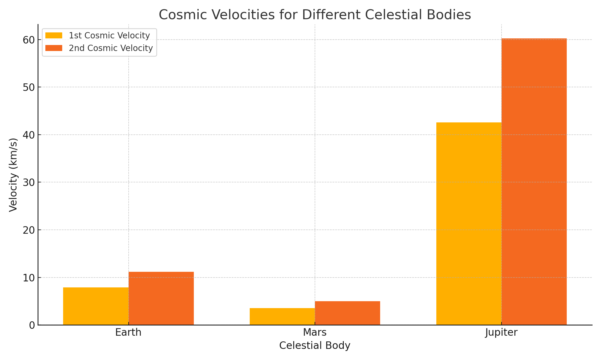

Escape Velocities and Cosmic Velocities
Exploring Gravitational Limits Across the Solar System
1. Theoretical Foundation
1.1 Cosmic Velocities Definitions
-
First Cosmic Velocity \( (v_1) \):
Minimum speed required to maintain a circular orbit just above a celestial body's surface.
$$ v_1 = \sqrt{\frac{GM}{R}} $$ -
Second Cosmic Velocity \( (v_2) \):
Escape velocity from the surface — the speed needed to break free from gravity without further propulsion.
$$ v_2 = \sqrt{2} \cdot v_1 = \sqrt{\frac{2GM}{R}} $$ -
Third Cosmic Velocity \( (v_3) \):
Speed required to escape the gravitational field of the Sun from Earth's orbit — critical for interstellar travel.
$$ v_3 = \sqrt{v_{\text{sun,escape}}^2 + v_{\text{orbital}}^2} $$
2. Mathematical Derivations
-
Gravitational Potential Energy (U):
$$ U = -\frac{GMm}{r} $$ -
Kinetic Energy (K):
$$ K = \frac{1}{2}mv^2 $$ -
For escape velocity, total mechanical energy must be ≥ 0:
$$ \frac{1}{2}mv^2 - \frac{GMm}{r} \geq 0 $$
⇒
$$ v = \sqrt{\frac{2GM}{r}} $$
3. Simulation and Visualization
4.1 Python Simulation Code
Click to see the Python simulation code
import numpy as np
import matplotlib.pyplot as plt
# Gravitational constant
G = 6.67430e-11
# Define celestial bodies: [Mass (kg), Radius (m)]
bodies = {
"Earth": [5.972e24, 6.371e6],
"Mars": [6.39e23, 3.3895e6],
"Jupiter": [1.898e27, 6.9911e7]
}
velocities = {"Body": [], "v1 (km/s)": [], "v2 (km/s)": []}
for body, (M, R) in bodies.items():
v1 = np.sqrt(G * M / R) / 1000 # km/s
v2 = np.sqrt(2 * G * M / R) / 1000 # km/s
velocities["Body"].append(body)
velocities["v1 (km/s)"].append(round(v1, 2))
velocities["v2 (km/s)"].append(round(v2, 2))
# Plotting
fig, ax = plt.subplots()
index = np.arange(len(bodies))
bar_width = 0.35
bar1 = ax.bar(index, velocities["v1 (km/s)"], bar_width, label='1st Cosmic Velocity')
bar2 = ax.bar(index + bar_width, velocities["v2 (km/s)"], bar_width, label='2nd Cosmic Velocity')
ax.set_xlabel('Celestial Body')
ax.set_ylabel('Velocity (km/s)')
ax.set_title('Cosmic Velocities for Different Celestial Bodies')
ax.set_xticks(index + bar_width / 2)
ax.set_xticklabels(velocities["Body"])
ax.legend()
plt.grid(True)
plt.tight_layout()
plt.show()
4. Applications in Space Exploration
| Velocity | Application |
|---|---|
| v₁ (Orbital) | Launching satellites into Low Earth Orbit (LEO) |
| v₂ (Escape) | Missions to Moon, Mars, outer planets |
| v₃ (Interstellar) | Exiting the Solar System (e.g., Voyager) |
5. Visual Gallery
Escape vs Orbital Velocities
Graph from simulation (bar plot of v₁ and v₂ for Earth, Mars, Jupiter) 
This bar chart compares the first and second cosmic velocities for Earth, Mars, and Jupiter. The first cosmic velocity represents the speed required for a stable orbit just above the planet's surface, while the second is the escape velocity. The chart visually highlights Jupiter’s strong gravity, resulting in much higher required velocities compared to Earth and Mars.
A conceptual illustration depicting the first (v₁), second (v₂), and third (v₃) cosmic velocities with directional annotations from Earth.

This GIF shows:
v₁: Orbit around Earth (gray circle)
v₂: Escape trajectory (red line)
v₃: Path escaping the Solar System (green line)
6. Deliverables
- ✅ Markdown document with derivations and physical insights
- ✅ Python simulation of cosmic velocities
- ✅ Graphical plots comparing celestial bodies
- ✅ Practical applications across missions
7. Conclusion
Escape and cosmic velocities form the foundation for understanding how objects move in and beyond gravitational fields. From achieving stable orbits to enabling interplanetary and interstellar missions, these velocities determine the fuel, design, and feasibility of space travel. The significant variations across celestial bodies like Earth, Mars, and Jupiter reveal how gravitational strength shapes mission planning. Mastering these principles is vital for the continued advancement of space exploration and future technologies aimed at reaching beyond our solar system.